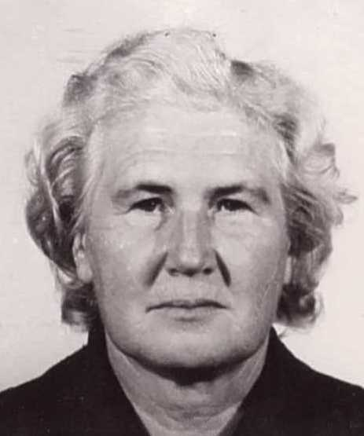

Ilga Laimdota Sirlaka 1922–2011
Peter's first cousin twice removed.
Also recorded as Ilga Stangaine; Ilga (Laimdota) Sirlaka (married name Stangaine).
Ilga Laimdota Sirlaka was born on 10 Nov 1922 in Vīstuči farm, Jaunrauna, Rauna, Cēsis district, Vidzeme, Latvia2,3,4, the daughter of Dāvis Sirlaks and Alma Leontīne Āboltiņa3,10. She married Arvīds Stangainis between 1952 and 1953 in Jaunpiebalga, Cēsis district, Vidzeme, Latvia3,11. She died on 7 Jan 20113,7,8 and was buried at Jaunrauna cemetery, Jaunrauna, Rauna, Cēsis district, Vidzeme, Latvia (according to an online family tree)9.
Family
- Parents
- Dāvis Sirlaks 1886–1952 and Alma Leontīne Āboltiņa 1887–1959 documented
- Husband
- Arvīds Stangainis 1923–2005 · married between 1952 and 1953 in Jaunpiebalga, Cēsis district, Vidzeme, Latvia3,11
- Children
- Velta Stangaine b. 1955 documented
- Ilze Stangaine b. 1953 documented
Life events
| Event | Date | Place and details |
|---|---|---|
| Born | 10 Nov 1922 | Vīstuči farm, Jaunrauna, Rauna, Cēsis district, Vidzeme, Latvia2,3,4 |
| Education | bet 1935 and 1945 | Ranka, Vidzeme, Latvia Admitted as one of 30 out of 80 applicants (p. 51). Worked five years at Vīstuči after school (p. 51).5 |
| Married | bet 1952 and 1953 | with Arvīds Stangainis Jaunpiebalga, Cēsis district, Vidzeme, Latvia3,11 |
| Died | 7 Jan 2011 | 3,7,8 |
| Work | Rauna, Cēsis district, Vidzeme, Latvia Rauna seed-control laboratory; later Jaunpiebalga (bookshop and laboratory). Lived in Jaunpiebalga in 1998 (p. 2). Struck off the Vīstuči register by her father in the Soviet period, she worked in a milk-and-bread shop in Cēsis (p. 3).6 | |
| Buried | Jaunrauna cemetery, Jaunrauna, Rauna, Cēsis district, Vidzeme, Latvia According to an online family tree9 |
Photographs


Open questions
Sources
- MyHeritage family tree 'Dzimta' of Peter's third cousin (his family site), member GEDCOM export of 26 Oct 2026, I9 (person-6000009), GEDCOM lines 387–446.
NAME Ilga (Laimdota) /Sirlaka/ · _MARNM Stangaine
- Ainas Sirlakas atmiņas ("Vīstuči"), Aina Jurciņa née Sirlaka, Priekuļi, 1998, pp. 22, 34, section "LEJAS VĪSTUČOS SAVU DZIMTAS KOKU IESTĀDA MĀRČA MAZDĒLS DAVIDS".
Ilga Sirlaka 1922.10.XI … Ilga Sirlaka, dz. 1922. 10. novembrī
Translation: Ilga Sirlaka, 10 XI 1922 … Ilga Sirlaka, b. 10 November 1922
Born at Vīstuči (p. 25). Godmother: Rozālija Strube of "Vidusvīstuči" (p. 41: "Ilga bija Strubu tantes krustbērns").
- Raimonds Voronins, family tree shared on FamilyTreeDNA (Sirlaks / Gibboy lines), Dāvis Sirlaks family.
- MyHeritage family tree 'Dzimta' of Peter's third cousin (his family site), member GEDCOM export of 26 Oct 2026, I9 (person-6000009), GEDCOM lines 387–446.
BIRT · 10 NOV 1922 · Vīstuči, Jaunrauna
- Ainas Sirlakas atmiņas ("Vīstuči"), Aina Jurciņa née Sirlaka, Priekuļi, 1998, p. 30, section "NĀKAMĀS VĪSTUČBĒRNU SKOLAS".
Ilga beidza 2 gadīgo Rankas mājturības skolu, apgūstot lieliskas zināšanas latviskas mājas turēšanā.
Translation: Ilga completed the 2-year Ranka housekeeping school, gaining excellent knowledge of Latvian housekeeping.
Admitted as one of 30 out of 80 applicants (p. 51). Worked five years at Vīstuči after school (p. 51).
- Ainas Sirlakas atmiņas ("Vīstuči"), Aina Jurciņa née Sirlaka, Priekuļi, 1998, pp. 30, 33, section "DR. RŪDOLFS SKAIDRAIS".
kurā Ilga dziedājusi, strādājot Raunas sēklu kontroles laboratorijā. … Dzīvi nogruntēja Jaunpiebalgā. Darbā grāmatnīcā, arī laboratorijā ļoti cienīta.
Translation: in which Ilga sang while working at the Rauna seed-control laboratory. … She grounded her life in Jaunpiebalga. Highly respected at work in the bookshop and also in the laboratory.
Rauna seed-control laboratory; later Jaunpiebalga (bookshop and laboratory). Lived in Jaunpiebalga in 1998 (p. 2). Struck off the Vīstuči register by her father in the Soviet period, she worked in a milk-and-bread shop in Cēsis (p. 3).
- Ainas Sirlakas atmiņas ("Vīstuči"), Aina Jurciņa née Sirlaka, Priekuļi, 1998, p. 22, section "LEJAS VĪSTUČOS SAVU DZIMTAS KOKU IESTĀDA MĀRČA MAZDĒLS DAVIDS".
Ilga Sirlaka 1922.10.XI [handwritten: - 2011. 7.I]
Translation: Ilga Sirlaka, 10 XI 1922 [pen: – 7 I 2011]
Pen addition in the family copy. Alive and living in Jaunpiebalga on 5 Jun 1998 (p. 2).
- MyHeritage family tree 'Dzimta' of Peter's third cousin (his family site), member GEDCOM export of 26 Oct 2026, I9 (person-6000009), GEDCOM lines 387–446.
DEAT · 7 JAN 2011 · AGE 88
- MyHeritage family tree 'Dzimta' of Peter's third cousin (his family site), member GEDCOM export of 26 Oct 2026, I9 (person-6000009), GEDCOM lines 387–446.
BURI · Jaunraunas kapi, Latvija
- Ainas Sirlakas atmiņas ("Vīstuči"), Aina Jurciņa née Sirlaka, Priekuļi, 1998, pp. 9, 21, 26, section "PAR PĒTERA UN MARIJAS PIEKTO BĒRNU DĀVIDU".
Viņiem ir pieci bērni: Jānis, Velta, Aina, Valdis, Ilga. … Mūsu vecākā māsa- 1918.gada septembrī. Mēs, pārējie trīs bērni, ik pēc 2 gadiem. … Mēs četri: Velta, Aina, Ilga, Valdis
Translation: They have five children: Jānis, Velta, Aina, Valdis, Ilga. … Our eldest sister, in September 1918. We, the other three children, every 2 years. … We four: Velta, Aina, Ilga, Valdis
Children: Jānis (1916–1918), Velta (1918), Aina (1920), Ilga (1922), Valdis (1924). p. 9 lists Valdis before Ilga, but the dated registers (pp. 22, 34) put Ilga first.
- Ainas Sirlakas atmiņas ("Vīstuči"), Aina Jurciņa née Sirlaka, Priekuļi, 1998, pp. 32, 34, section "DĀVJA UN ALMAS CETURTĀ BĒRNA ILGAS DZĪVES GAITA".
Toties Arvīds Stangainis no Kraukļiem teica: “Ilga ir visjaukākā sieviete pasaulē.” Ilga jau bija pie 30, kad viņi sarakstījās. … Arvīds Stangainis, dz. 1923. 8.septembrī
Translation: But Arvīds Stangainis of "Kraukļi" said: "Ilga is the loveliest woman in the world." Ilga was already nearly 30 when they registered their marriage [sarakstījās; or: when they corresponded]. … Arvīds Stangainis, b. 8 September 1923
Husband Arvīds Stangainis, of the farm "Kraukļi". Married ("sarakstījās", registered) when Ilga was about 30 (c. 1952); first daughter born Oct 1953, so married c. 1952–53. Two daughters, Ilze and Velta (LIVING); a son was lost (miscarriage) while she was building the Jaunpiebalga secondary school (p. 33).